Inhalt Index DeskTop Bronstein

 Algebra und Diskrete Mathematik Mengenlehre Relationen und Abbildungen
Algebra und Diskrete Mathematik Mengenlehre Relationen und Abbildungen


Eine Abbildung (oder Funktion) f von einer Menge A in eine Menge B (Bezeichnung 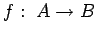) ist eine Zuordnungsvorschrift, die jedem Element 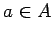 eindeutig ein Element 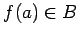 zuordnet. Man kann eine Abbildung f als zweistellige Relation zwischen A und 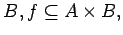 auffassen: 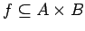 heißt Abbildung von A nach B, falls gilt:
| 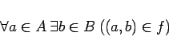 | (5.82) |
und
| 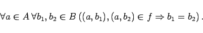 | (5.83) |
Die Funktion f heißt eineindeutig (oder injektiv), falls zusätzlich gilt:
| 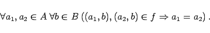 | (5.84) |
Während bei einer Abbildung nur verlangt wird, daß jedes Original nur ein Bild hat, bedeutet Injektivität, daß auch jedes Bild nur ein Original besitzt.
Die Funktion f heißt Abbildung von A auf B (oder surjektiv), falls gilt:
| 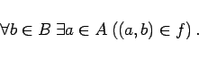 | (5.85) |
Eine injektive und surjektive Abbildung heißt bijektiv. Für bijektive Abbildungen ist die inverse Relation eine Abbildung 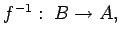 die sogenannte Umkehrabbildung von f.
Das Relationenprodukt, auf Abbildungen angewandt, charakterisiert die Hintereinanderausführung von Abbildungen: Sind und 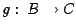 Abbildungen, so ist 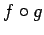 eine Abbildung von A nach C, und es gilt
Man beachte die Reihenfolge von f und g in dieser Gleichung (unterschiedliche Handhabung in der Literatur!).